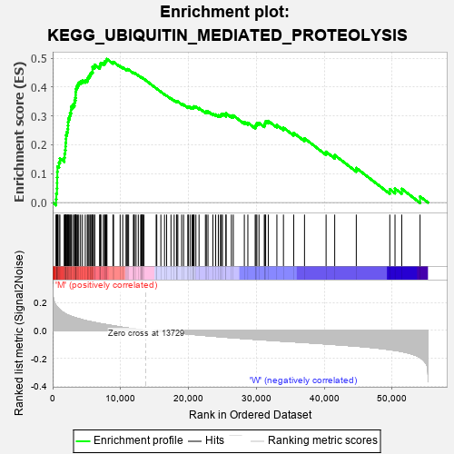
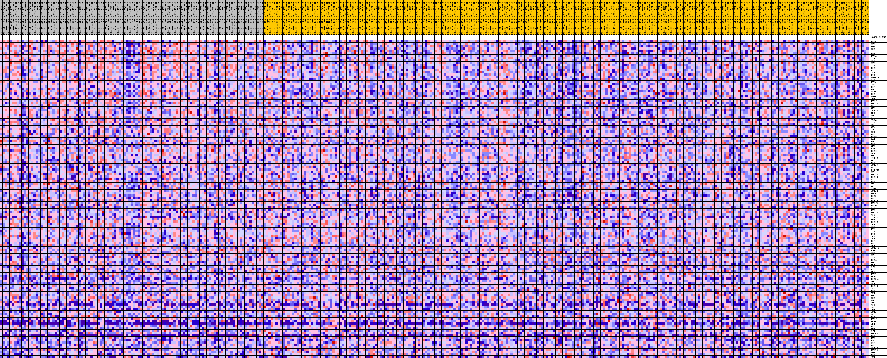
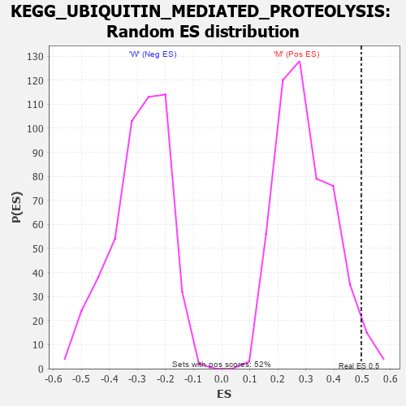

| Dataset | MUC16.MUC16.cls#M_versus_W.MUC16.cls#M_versus_W_repos |
| Phenotype | MUC16.cls#M_versus_W_repos |
| Upregulated in class | M |
| GeneSet | KEGG_UBIQUITIN_MEDIATED_PROTEOLYSIS |
| Enrichment Score (ES) | 0.49678162 |
| Normalized Enrichment Score (NES) | 1.6648027 |
| Nominal p-value | 0.032945737 |
| FDR q-value | 0.112687856 |
| FWER p-Value | 0.522 |

| PROBE | DESCRIPTION (from dataset) | GENE SYMBOL | GENE_TITLE | RANK IN GENE LIST | RANK METRIC SCORE | RUNNING ES | CORE ENRICHMENT | |
|---|---|---|---|---|---|---|---|---|
| 1 | UBE3C | na | 497 | 0.179 | 0.0116 | Yes | ||
| 2 | CDC23 | na | 542 | 0.177 | 0.0311 | Yes | ||
| 3 | UBE4A | na | 635 | 0.171 | 0.0490 | Yes | ||
| 4 | CDC20 | na | 652 | 0.169 | 0.0681 | Yes | ||
| 5 | CUL3 | na | 659 | 0.169 | 0.0874 | Yes | ||
| 6 | UBA6 | na | 686 | 0.167 | 0.1061 | Yes | ||
| 7 | UBE2G1 | na | 706 | 0.166 | 0.1249 | Yes | ||
| 8 | KLHL9 | na | 932 | 0.153 | 0.1384 | Yes | ||
| 9 | ERCC8 | na | 1068 | 0.147 | 0.1529 | Yes | ||
| 10 | CDC27 | na | 1710 | 0.125 | 0.1556 | Yes | ||
| 11 | CUL4A | na | 1762 | 0.123 | 0.1688 | Yes | ||
| 12 | UBE2K | na | 1831 | 0.121 | 0.1815 | Yes | ||
| 13 | DDB1 | na | 1896 | 0.119 | 0.1940 | Yes | ||
| 14 | TRIM37 | na | 1906 | 0.119 | 0.2075 | Yes | ||
| 15 | HERC3 | na | 1963 | 0.117 | 0.2200 | Yes | ||
| 16 | ANAPC10 | na | 1974 | 0.117 | 0.2333 | Yes | ||
| 17 | CUL2 | na | 2089 | 0.114 | 0.2443 | Yes | ||
| 18 | UBE2O | na | 2227 | 0.111 | 0.2546 | Yes | ||
| 19 | FANCL | na | 2256 | 0.111 | 0.2668 | Yes | ||
| 20 | RCHY1 | na | 2273 | 0.110 | 0.2791 | Yes | ||
| 21 | UBA1 | na | 2322 | 0.109 | 0.2908 | Yes | ||
| 22 | ANAPC1 | na | 2500 | 0.106 | 0.2997 | Yes | ||
| 23 | UBE2S | na | 2561 | 0.104 | 0.3106 | Yes | ||
| 24 | ANAPC4 | na | 2702 | 0.102 | 0.3197 | Yes | ||
| 25 | KEAP1 | na | 2712 | 0.101 | 0.3312 | Yes | ||
| 26 | UBE2J1 | na | 2958 | 0.097 | 0.3379 | Yes | ||
| 27 | UBE2D3 | na | 3207 | 0.093 | 0.3441 | Yes | ||
| 28 | CBL | na | 3237 | 0.093 | 0.3542 | Yes | ||
| 29 | SKP2 | na | 3347 | 0.091 | 0.3627 | Yes | ||
| 30 | TRIP12 | na | 3388 | 0.091 | 0.3724 | Yes | ||
| 31 | BIRC6 | na | 3391 | 0.090 | 0.3827 | Yes | ||
| 32 | WWP2 | na | 3416 | 0.090 | 0.3927 | Yes | ||
| 33 | CUL1 | na | 3518 | 0.089 | 0.4010 | Yes | ||
| 34 | FBXO4 | na | 3689 | 0.086 | 0.4078 | Yes | ||
| 35 | CUL5 | na | 3842 | 0.084 | 0.4147 | Yes | ||
| 36 | SAE1 | na | 4108 | 0.081 | 0.4191 | Yes | ||
| 37 | BRCA1 | na | 4384 | 0.077 | 0.4230 | Yes | ||
| 38 | FZR1 | na | 4799 | 0.071 | 0.4237 | Yes | ||
| 39 | CDC34 | na | 5098 | 0.068 | 0.4261 | Yes | ||
| 40 | UBE4B | na | 5194 | 0.067 | 0.4321 | Yes | ||
| 41 | UBE2W | na | 5331 | 0.066 | 0.4371 | Yes | ||
| 42 | SYVN1 | na | 5488 | 0.064 | 0.4417 | Yes | ||
| 43 | UBA7 | na | 5586 | 0.063 | 0.4471 | Yes | ||
| 44 | UBE2M | na | 5740 | 0.061 | 0.4514 | Yes | ||
| 45 | BIRC2 | na | 5880 | 0.060 | 0.4558 | Yes | ||
| 46 | HUWE1 | na | 5882 | 0.060 | 0.4627 | Yes | ||
| 47 | UBE2H | na | 5886 | 0.060 | 0.4695 | Yes | ||
| 48 | PPIL2 | na | 6164 | 0.057 | 0.4711 | Yes | ||
| 49 | UBE2Z | na | 6186 | 0.057 | 0.4772 | Yes | ||
| 50 | TRIM32 | na | 6926 | 0.050 | 0.4695 | Yes | ||
| 51 | MID1 | na | 6971 | 0.049 | 0.4744 | Yes | ||
| 52 | UBR5 | na | 7068 | 0.048 | 0.4782 | Yes | ||
| 53 | ANAPC2 | na | 7084 | 0.048 | 0.4835 | Yes | ||
| 54 | PML | na | 7467 | 0.045 | 0.4818 | Yes | ||
| 55 | RHOBTB2 | na | 7652 | 0.044 | 0.4835 | Yes | ||
| 56 | COP1 | na | 7663 | 0.044 | 0.4883 | Yes | ||
| 57 | UBE2L6 | na | 7825 | 0.043 | 0.4903 | Yes | ||
| 58 | UBE2L3 | na | 7928 | 0.042 | 0.4932 | Yes | ||
| 59 | SOCS1 | na | 7994 | 0.041 | 0.4968 | Yes | ||
| 60 | UBE2N | na | 8875 | 0.034 | 0.4847 | No | ||
| 61 | VHL | na | 8970 | 0.033 | 0.4868 | No | ||
| 62 | UBA3 | na | 9937 | 0.025 | 0.4722 | No | ||
| 63 | ANAPC7 | na | 10318 | 0.022 | 0.4678 | No | ||
| 64 | ANAPC5 | na | 10803 | 0.019 | 0.4612 | No | ||
| 65 | UBE2Q1 | na | 10938 | 0.018 | 0.4609 | No | ||
| 66 | UBE2C | na | 11002 | 0.018 | 0.4618 | No | ||
| 67 | UBE3A | na | 11184 | 0.016 | 0.4604 | No | ||
| 68 | PRPF19 | na | 11893 | 0.012 | 0.4489 | No | ||
| 69 | UBE2J2 | na | 11982 | 0.011 | 0.4486 | No | ||
| 70 | UBE2G2 | na | 12025 | 0.011 | 0.4491 | No | ||
| 71 | CUL7 | na | 12278 | 0.009 | 0.4455 | No | ||
| 72 | HERC2 | na | 12612 | 0.007 | 0.4403 | No | ||
| 73 | UBE2R2 | na | 12962 | 0.005 | 0.4345 | No | ||
| 74 | FBXW8 | na | 13081 | 0.004 | 0.4328 | No | ||
| 75 | KLHL13 | na | 13097 | 0.004 | 0.4330 | No | ||
| 76 | PIAS4 | na | 13196 | 0.003 | 0.4316 | No | ||
| 77 | UBE2D2 | na | 13224 | 0.003 | 0.4314 | No | ||
| 78 | ITCH | na | 13241 | 0.003 | 0.4315 | No | ||
| 79 | FBXW11 | na | 13438 | 0.002 | 0.4281 | No | ||
| 80 | UBA2 | na | 15244 | -0.001 | 0.3955 | No | ||
| 81 | CUL4B | na | 15332 | -0.001 | 0.3941 | No | ||
| 82 | HERC4 | na | 15933 | -0.005 | 0.3837 | No | ||
| 83 | PIAS1 | na | 16472 | -0.008 | 0.3748 | No | ||
| 84 | CBLB | na | 16784 | -0.009 | 0.3703 | No | ||
| 85 | RBX1 | na | 17422 | -0.013 | 0.3602 | No | ||
| 86 | UBE2E1 | na | 17894 | -0.015 | 0.3534 | No | ||
| 87 | STUB1 | na | 18241 | -0.017 | 0.3490 | No | ||
| 88 | ANAPC13 | na | 18298 | -0.017 | 0.3500 | No | ||
| 89 | MGRN1 | na | 18433 | -0.018 | 0.3496 | No | ||
| 90 | FBXW7 | na | 18996 | -0.020 | 0.3417 | No | ||
| 91 | CDC16 | na | 19279 | -0.022 | 0.3391 | No | ||
| 92 | SOCS3 | na | 19906 | -0.025 | 0.3306 | No | ||
| 93 | UBE2A | na | 19973 | -0.025 | 0.3323 | No | ||
| 94 | MAP3K1 | na | 20238 | -0.026 | 0.3305 | No | ||
| 95 | NEDD4 | na | 20526 | -0.028 | 0.3284 | No | ||
| 96 | ELOC | na | 20671 | -0.028 | 0.3291 | No | ||
| 97 | DDB2 | na | 20780 | -0.029 | 0.3304 | No | ||
| 98 | BTRC | na | 20825 | -0.029 | 0.3329 | No | ||
| 99 | UBE2F | na | 21093 | -0.030 | 0.3315 | No | ||
| 100 | NEDD4L | na | 21555 | -0.032 | 0.3269 | No | ||
| 101 | UBE2QL1 | na | 22495 | -0.036 | 0.3140 | No | ||
| 102 | PIAS2 | na | 22629 | -0.037 | 0.3158 | No | ||
| 103 | SMURF1 | na | 22871 | -0.038 | 0.3157 | No | ||
| 104 | UBE2E3 | na | 23590 | -0.041 | 0.3074 | No | ||
| 105 | CBLC | na | 24006 | -0.042 | 0.3047 | No | ||
| 106 | UBE2D1 | na | 24398 | -0.044 | 0.3026 | No | ||
| 107 | TRAF6 | na | 24705 | -0.045 | 0.3023 | No | ||
| 108 | UBE3B | na | 24846 | -0.046 | 0.3050 | No | ||
| 109 | CDC26 | na | 25003 | -0.046 | 0.3074 | No | ||
| 110 | SKP1 | na | 25518 | -0.048 | 0.3036 | No | ||
| 111 | BIRC3 | na | 25531 | -0.048 | 0.3089 | No | ||
| 112 | FBXO2 | na | 26317 | -0.051 | 0.3006 | No | ||
| 113 | RNF7 | na | 26600 | -0.052 | 0.3014 | No | ||
| 114 | XIAP | na | 28225 | -0.058 | 0.2787 | No | ||
| 115 | ANAPC11 | na | 28744 | -0.060 | 0.2761 | No | ||
| 116 | WWP1 | na | 29824 | -0.063 | 0.2638 | No | ||
| 117 | UBE2B | na | 29939 | -0.064 | 0.2691 | No | ||
| 118 | UBE2I | na | 30070 | -0.064 | 0.2741 | No | ||
| 119 | NHLRC1 | na | 30385 | -0.065 | 0.2759 | No | ||
| 120 | AIRE | na | 31166 | -0.068 | 0.2695 | No | ||
| 121 | UBOX5 | na | 31264 | -0.068 | 0.2755 | No | ||
| 122 | PIAS3 | na | 31366 | -0.068 | 0.2815 | No | ||
| 123 | ELOB | na | 31760 | -0.069 | 0.2824 | No | ||
| 124 | UBE2Q2 | na | 33019 | -0.074 | 0.2680 | No | ||
| 125 | UBE2U | na | 33986 | -0.077 | 0.2593 | No | ||
| 126 | HERC1 | na | 35496 | -0.081 | 0.2412 | No | ||
| 127 | MDM2 | na | 37086 | -0.086 | 0.2223 | No | ||
| 128 | DET1 | na | 40264 | -0.096 | 0.1757 | No | ||
| 129 | UBE2NL | na | 41533 | -0.101 | 0.1643 | No | ||
| 130 | SMURF2 | na | 44711 | -0.112 | 0.1196 | No | ||
| 131 | UBE2E2 | na | 49646 | -0.137 | 0.0459 | No | ||
| 132 | SIAH1 | na | 50413 | -0.142 | 0.0483 | No | ||
| 133 | UBE2D4 | na | 51405 | -0.151 | 0.0477 | No | ||
| 134 | PRKN | na | 54104 | -0.195 | 0.0211 | No |

